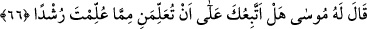
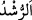

Kim şeriat, tarikat ve hakîkatte onlara tâbî olur, onların ilimlerini öğrenir, amelleriyle
amel eder, edeb ve ahlâklarıyla hallenirse - hangi mezheb üzere olursa olsun- gücüne ve
tâkatine göre Rasûlullah (s.a.)’in izine tâbî olmuş olur. Kim de bu hususlarda onlara tâbî
olmazsa, şüphesiz ki Allah Rasûlü (s.a.)’in izinden sapmış, kabul dâiresinden çıkmış
olur.” Buraya kadar yapılan nakil, şeyhim Osman Fazlî Efendi’nin sözünün özetidir.
Bazı meşâyıhın, müctehidlerin aşk mertebesine ulaşamadıklarına dair nakledilen
sözlerinin yorumları vardır. Biz onların bir kısmını Tamâmü’l-feyz adlı kitabımızda
zikrettik. Öyle görünüyor ki bunlar sekr ve kabz hallerinde sâdır olan sözlerdir. Bu
yüzden onlara îtibar edilmez. Tam olan bir edeb de bu büyük imamlar hakkında hayırlı
söz dışında dili tutmayı gerektirir.
66. Mûsâ ona: Sana öğretilenden, bana, doğruyu bulmama yardım edecek bir bilgi
öğretmen için sana tâbi olayım mı? dedi.
Bu âyet, sözün gelişinden neş’et eden bir suale cevâben bir başlangıç cümlesidir.
Sanki: “İkisi arasında neler cereyan etmiştir?” diye sorulmuş ve cevab olarak şöyle
denilmiştir:
“Mûsâ ona:” Hızır (a.s.)’a “Sana öğretilenden, bana, doğruyu bulmama yardım
edecek bir bilgi öğretmen için” dinim konusunda kendisiyle rüşde ereceğim/doğru yolu
bulacağım rüşd sâhibi bir ilim öğretmen şartıyla “sana tâbi olayım mı? dedi.”
Bu cümle, öğretme şartıyla Mûsâ (a.s.)’ın Hızır (a.s.)’dan izin istemesidir. Doğruya
tâbi olmanın şerefi konusunda bu âyet sana delil olarak yeter.
“__WORD__ er-Rüşd” hayra isâbet etmek demektir. Kâşifî “rüşden” kelimesi hakkında şöyle
der: “Rüşde dayanan bir ilim”
Hz. Mûsâ (a.s) konuşmasında tevâzua son derece riâyet etmiştir. Demek ki insan
kendisinden daha iyi bilenin yanında tevâzu sâhibi olmalıdır.
İmam (Râzî) der ki: Âyet Mûsâ (a.s.)’ın ilim yolunda her türlü âdâba riâyet ettiğine
delâlet eder. “Sana tâbi olayım mı?” diyerek kendisini ona tâbî kılmış, bu tâbi oluşu
isbat için izin istedi. “Bana öğretmen için” diyerek kendisinin bilmediğini ve üstazının
ilim sâhibi olduğunu ikrar etti. “Sana öğretilenden” diyerek Hızır (a.s)’ın bildiğinden
bir kısmını öğretmesini istedi. Yâni sana verilen ilimde senin mertebene ulaşmak
istemiyorum. Fakirin zenginin malından biraz istediği gibi ilminden biraz taleb
ediyorum. Yine “sana öğretilenden” ifâdesi, onun ilmi Allah’tan aldığını itiraftır.
“Doğruyu bulmama yardım edecek” ifâdesi, irşad talebinde bulunmaktır. Yâni, eğer o
ilim olmasaydı, dalâlete düşerdi. Mûsâ (a.s.), Hızır (a.s.)’dan Allah’ın kendisine
muâmele ettiği gibi muâmele etmesini istemiş, yâni Allah’ın kendisini öğretme nimeti
ile nimetlendirdiği gibi, o da Mûsâ (a.s.)’a öğretme iyiliğinde bulunmasını taleb